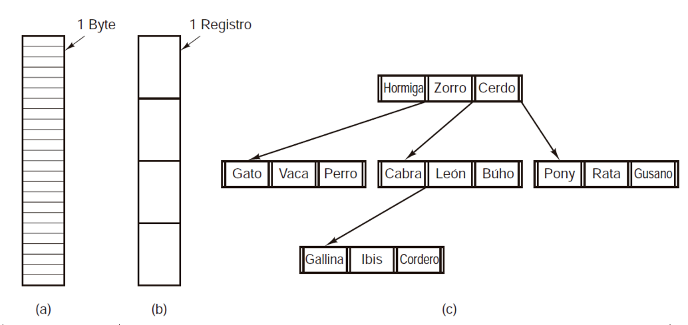
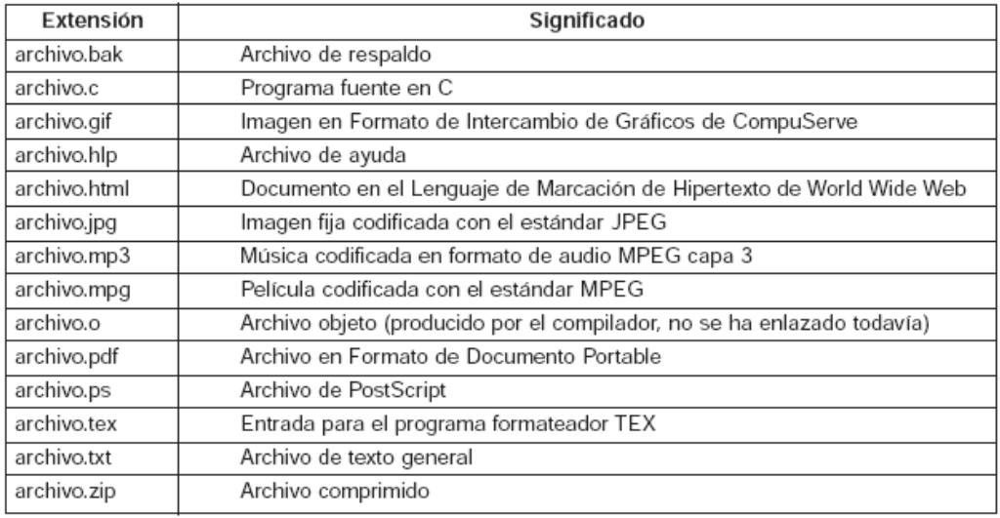

4.1 Estructura del sistema de archivos
La estructura del sistema de archivos según Tanenbaum (2009), es una organización jerárquica basada en directorios que usa inodos para almacenar los metadatos de los archivos, con una tabla de inodos que permite gestionar los archivos de manera eficiente. Los bloques de datos almacenan la información de los archivos, y el acceso a estos datos se realiza a través de las estructuras de directorios.
Nomenclatura de archivos
Según Tanenbaum (1998), se refiere a cómo los archivos son nombrados, gestionados y accedidos en un sistema
de archivos y se refiere a cómo los archivos son identificados, ubicados y organizados en el sistema de
archivos. Un nombre de archivo es una cadena alfanumérica utilizada para identificar un archivo en el
directorio, pero no contiene información sobre su ubicación física. La ruta de archivo describe su
ubicación, y puede ser absoluta (desde la raíz del sistema) o relativa (en relación con el directorio
actual). Cada archivo tiene un inodo asociado que almacena sus metadatos, pero no el nombre del archivo. Los
directorios son estructuras que vinculan los nombres de los archivos con sus inodos, facilitando su
localización. Existen convenciones como la longitud del nombre, el uso de extensiones para indicar el tipo
de archivo, y la distinción entre mayúsculas y minúsculas en algunos sistemas. Finalmente, los archivos
están organizados en una jerarquía de directorios en forma de árbol, lo que facilita la navegación y la
gestión de archivos.
Estructura de archivos
De acuerdo con Tanenbaum (1998), la estructura de archivos se organiza en una jerarquía que permite
almacenar y gestionar eficientemente los datos. Tanenbaum describe la estructura de archivos en términos de
las siguientes componentes principales:
- Inodos (Inodes):
Los inodos son estructuras de datos que almacenan metadatos sobre un archivo, como su tamaño, las fechas de acceso y modificación, los permisos, el propietario y las ubicaciones de los bloques de datos en el disco. Sin embargo, un inodo no contiene el nombre del archivo, solo la información necesaria para acceder a su contenido. - Directorio (Directory):
Los directorios son estructuras especiales que contienen una lista de nombres de archivos y sus correspondientes referencias a inodos. Un directorio funciona como una "tabla de contenido", que permite al sistema localizar un archivo mediante su nombre y, a través del inodo, acceder a su contenido. - Superbloque (Superblock):
El superbloque es una estructura clave que contiene información crítica sobre el sistema de archivos, como el tamaño total del sistema de archivos, el número de bloques libres, la ubicación de los bloques de inodos y la cantidad total de bloques de datos disponibles. Es utilizado para gestionar la integridad y el espacio del sistema de archivos. - Bloques de Datos (Data Blocks):
Los bloques de datos son unidades de almacenamiento donde se guardan los datos reales de los archivos. Los archivos pueden estar distribuidos en uno o varios bloques de datos en el disco, y el sistema de archivos gestiona cómo y dónde se almacenan estos bloques. - Estructura Jerárquica:
Tanenbaum describe que los sistemas de archivos suelen organizarse en una estructura jerárquica o en un árbol de directorios. La raíz del sistema de archivos es el punto de inicio, y desde allí se ramifican los subdirectorios y archivos. Esta estructura facilita la navegación y el acceso a los archivos. - Caché:
Para mejorar el rendimiento, muchos sistemas de archivos utilizan caché para almacenar los bloques de datos y los inodos más utilizados. De esta forma, se reducen los accesos a disco y se incrementa la eficiencia.
Resumen de la estructura de archivos según Tanenbaum:
- Inodos: Contienen metadatos de archivos.
- Directorios: Enlazan nombres de archivos con inodos.
- Superbloque: Información general sobre el sistema de archivos.
- Bloques de Datos: Donde se almacenan los datos de los archivos.
- Jerarquía: Organización de archivos en una estructura de árbol.
- Caché: Almacenamiento temporal para mejorar la eficiencia.
Esta estructura permite una gestión eficiente y flexible de archivos dentro de un sistema de archivos.
Los archivos se pueden estructurar en una de varias formas. Tres posibilidades comunes se describen en la Figura 1.
Figura 1.
Tres tipos de archivos. (a)Secuencia de bytes, (b) Secuencia de registros, (c) Árbol, (Tanenbaum, 2009, p. 259).

Tanenbaum, en su obra Sistemas Operativos: Diseño e Implementación, describe tres tipos principales de archivos que se pueden encontrar en un sistema de archivos:
-
Archivos de Datos:
Descripción: Son los archivos que contienen información que puede ser utilizada por los usuarios o aplicaciones. Este tipo de archivo almacena los datos reales, como documentos, imágenes, videos, y más.
Ejemplo: Un archivo de texto (.txt), una imagen (.jpg), o un archivo de audio (.mp3).
Características:- Su contenido es accesible por los usuarios y programas.
- Se puede leer, escribir o modificar dependiendo de los permisos asignados al archivo.
-
Archivos de Programa:
Descripción: Son los archivos que contienen programas ejecutables, es decir, instrucciones o código que el sistema puede ejecutar.
Ejemplo: Archivos ejecutables como .exe (en sistemas Windows), o programas binarios como a.out en sistemas Unix/Linux.
Características:- Estos archivos contienen instrucciones que el sistema operativo puede cargar en memoria y ejecutar.
- Tienen permisos específicos que pueden permitir su ejecución (lectura, escritura, ejecución).
-
Archivos Especiales:
Descripción: Son archivos que no contienen datos o programas directamente, sino que sirven para representar dispositivos físicos u otros recursos del sistema operativo.
Ejemplo: Archivos de dispositivos en sistemas Unix, como /dev/sda (dispositivo de almacenamiento), /dev/tty (terminal) o /dev/null (sumidero de datos).
Características:- No son archivos en el sentido tradicional, ya que representan dispositivos o flujos de datos, y a menudo se accede a ellos mediante llamadas al sistema.
- Permiten la interacción con hardware o periféricos como discos, impresoras, o puertos de comunicación.
Resumen
- Archivos de Datos: Contienen información de usuario o aplicación.
- Archivos de Programa: Contienen código ejecutable para el sistema.
- Archivos Especiales: Representan dispositivos o recursos del sistema operativo.
Estos tres tipos de archivos son fundamentales para el funcionamiento de un sistema operativo, cada uno con un propósito distinto, pero todos gestionados dentro de la misma estructura de sistema de archivos.
Tipos de archivos
En Tanenbaum (2009, p. 260), se comenta que numerosos sistemas operativos admiten distintos tipos de archivos. Por ejemplo, UNIX y Windows manejan archivos y directorios regulares. Además, UNIX incluye archivos especiales de caracteres y bloques. Los archivos regulares son aquellos que almacenan información del usuario, y todos los archivos representados en la figura 4-2 son ejemplos de archivos regulares. Los directorios, por su parte, son estructuras dentro del sistema de archivos que permiten mantener su organización. En esta sección, nos centraremos en los archivos regulares.
Los archivos especiales de caracteres están asociados con la entrada/salida y se utilizan para representar dispositivos de E/S en serie, como terminales, impresoras y redes. Los archivos especiales de bloques, en cambio, se emplean para representar discos.
Los archivos regulares suelen ser de tipo ASCII o binarios. Los archivos ASCII están formados por líneas de texto y, en algunos sistemas, cada línea termina con un carácter de retorno de carro, mientras que en otros se utiliza el carácter de avance de línea, e incluso algunos sistemas (como MS-DOS) emplean ambos. Las líneas no necesariamente deben tener la misma longitud.
La principal ventaja de los archivos ASCII es que pueden ser visualizados e impresos tal como están, además de poder ser editados con cualquier editor de texto. Asimismo, como muchos programas utilizan archivos ASCII para la entrada y salida, es sencillo conectar la salida de un programa con la entrada de otro, como ocurre en las canalizaciones de shell. Aunque la conexión entre procesos no sea fácil, la interpretación de la información se vuelve más accesible cuando se utiliza una convención estándar como ASCII.
Por otro lado, los archivos binarios simplemente no son archivos ASCII. Si se listan en la impresora, muestran un conjunto incomprensible de caracteres. Generalmente, estos archivos tienen una estructura interna conocida que es utilizada por los programas que los manejan.
En resumen
- Los sistemas operativos, como UNIX y Windows, soportan varios tipos de archivos, incluyendo archivos regulares, directorios y archivos especiales.
- Los archivos regulares contienen información del usuario y son principalmente de dos tipos: ASCII (texto que puede ser leído y editado fácilmente) y binarios (estructurados de forma interna y no legibles directamente).
- Los archivos especiales de caracteres modelan dispositivos de entrada/salida como terminales e impresoras.
- Los archivos especiales de bloques se usan para representar discos.
- Los archivos ASCII son útiles porque pueden ser manipulados por múltiples programas, facilitando la integración entre procesos.
- Los archivos binarios tienen una estructura interna específica para los programas que los utilizan.
Acceso de archivos
En los primeros sistemas operativos, solo existía el acceso secuencial a los archivos, lo que significa que los datos debían leerse en orden, desde el principio hasta el final, sin poder saltarse partes. Este tipo de acceso era adecuado para medios como la cinta magnética. Sin embargo, con el uso de discos, se introdujo el acceso aleatorio, que permite leer los registros en cualquier orden, lo que es esencial para aplicaciones como bases de datos.
Para determinar desde qué posición leer en un archivo, se pueden usar dos métodos: uno donde cada operación de lectura especifica la posición, y otro, más común en sistemas como UNIX y Windows, que usa una operación especial llamada seek para establecer la posición actual de lectura (Tanenbaum, 2009, p.262).
Atributos de archivos
Cada archivo tiene un nombre y su contenido, pero los sistemas operativos también asocian información adicional a cada archivo, como la fecha y hora de su última modificación y su tamaño. Estos datos adicionales se conocen como atributos del archivo o metadatos. La lista de atributos puede variar significativamente entre diferentes sistemas operativos. La tabla de la figura 4-4 presenta algunos ejemplos, aunque existen otros atributos posibles. Ningún sistema incluye todos, pero cada uno tiene algunos de ellos (Tanenbaum, 2009, p. 263).
Figura 2.
Algunos posibles atributos de archivos, (Tananbaum, 2009, p. 263).
Archivos en sistemas operativos
Muchos sistemas operativos permiten nombres de archivos compuestos por dos partes, separadas por un punto, como en "prog.c". La parte que sigue al punto se llama extensión del archivo y generalmente proporciona información sobre su tipo. Por ejemplo, en MS-DOS, los nombres de archivos pueden tener de 1 a 8 caracteres, seguidos por una extensión opcional de 1 a 3 caracteres. En UNIX, el tamaño de la extensión (si existe) es determinado por el usuario, y un archivo puede tener varias extensiones, como en "paginainicio.html.zip", donde ".html" indica que es una página web en HTML y ".zip" señala que el archivo está comprimido con el programa zip. La figura 3 muestra algunas de las extensiones más comunes y su significado (Tanenbaum, 2009, p. 258).
Tipo Binario
Los archivos binarios, según Tanenbaum (2009), son aquellos que contienen datos en un formato que no es legible para los humanos directamente, ya que están codificados en una secuencia de 1s y 0s (binario). A diferencia de los archivos de texto (como los archivos ASCII), los archivos binarios tienen una estructura interna que debe ser interpretada por programas específicos que conocen ese formato.
Características de los archivos binarios según Tanenbaum
- No legibles por humanos: El contenido de los archivos binarios no es comprensible si se abre en un editor de texto, ya que está representado en una forma que solo puede ser interpretada por el programa adecuado.
- Estructura interna: Los archivos binarios tienen una estructura definida, que puede incluir encabezados, metadatos y otros datos, dependiendo del tipo de archivo. Esta estructura es entendida por el programa que los maneja, como un procesador de imágenes o un reproductor de audio.
- Tipos comunes: Los archivos binarios incluyen una amplia variedad de
formatos, como:
- Archivos ejecutables (.exe, .bin): Contienen código que puede ser ejecutado directamente por el sistema operativo.
- Archivos de imágenes (.jpg, .png): Contienen datos de imágenes en un formato comprimido o no comprimido.
- Archivos de audio (.mp3, .wav): Contienen datos sonoros en formato binario.
- Archivos comprimidos (.zip, .tar): Contienen otros archivos que han sido comprimidos para ahorrar espacio.
- Archivos de bases de datos (.db, .sqlite): Almacenan información estructurada que es leída por sistemas de bases de datos.
- Acceso y manipulación: Para acceder y manipular estos archivos, se necesitan programas específicos que conozcan el formato binario del archivo, ya que no se pueden leer ni editar directamente con editores de texto.
En resumen: Tanenbaum describe los archivos binarios como aquellos que contienen datos que no son legibles por humanos, sino que deben ser procesados por programas diseñados para entender el formato binario del archivo.
Figura 3.
Algunas extensiones de archivos comunes. (Tanenbaum, 2009, p. 258).

Tanenbaum (2009). La codificación de archivos es un proceso clave en la gestión y manipulación de archivos dentro de los sistemas operativos. En su obra "Sistemas Operativos: Diseño e Implementación", Tanenbaum describe cómo los archivos pueden ser representados de diferentes maneras dependiendo del tipo de datos que contienen y el propósito para el cual se usan. La codificación de archivos puede implicar representar datos de manera eficiente para su almacenamiento o transmisión, y puede involucrar diversos formatos, tanto para archivos de texto como para archivos binarios.
Según Tanenbaum, los aspectos clave de la codificación de archivos incluyen
Codificación de archivos de texto
ASCII y UTF-8 son ejemplos comunes. En estos casos, los archivos de texto se almacenan utilizando un conjunto de caracteres que pueden ser interpretados como texto legible por humanos. Tanenbaum explica que los sistemas de archivos deben ser capaces de manejar y almacenar estos archivos de manera eficiente, utilizando representaciones de caracteres que sean adecuadas para el sistema.
Archivos binarios
Tanenbaum menciona que los archivos binarios son una representación directa de los datos en formato de bits, y no pueden ser interpretados sin el programa adecuado que conozca la estructura interna del archivo. Por ejemplo, los archivos ejecutables o los archivos de imagen están codificados en un formato binario que necesita un programa especializado para ser leído y procesado.
En este contexto, la codificación binaria es necesaria para representar una amplia variedad de tipos de archivos, tales como archivos de imagen, audio y video, que no son legibles en formato de texto.
Compresión de archivos
Tanenbaum también explica la importancia de la compresión de archivos para mejorar la eficiencia del almacenamiento y la transmisión de archivos. Los algoritmos de compresión, como ZIP o gzip, reducen el tamaño de los archivos al eliminar redundancias y representar la información de manera más compacta, sin perder datos esenciales.
Codificación de dispositivos
En los sistemas operativos, Tanenbaum menciona cómo algunos tipos de archivos son utilizados para representar dispositivos de hardware, y cómo los sistemas de archivos gestionan la codificación de dispositivos (como archivos de dispositivos de bloques o caracteres) para permitir la comunicación entre el sistema operativo y los periféricos.
En resumen: La codificación de archivos es un proceso fundamental que incluye la representación de los archivos en un formato que sea adecuado para su almacenamiento y manipulación por el sistema operativo. Esto involucra codificación de caracteres para archivos de texto, representación binaria para archivos no textuales, y técnicas de compresión para optimizar el uso del espacio.